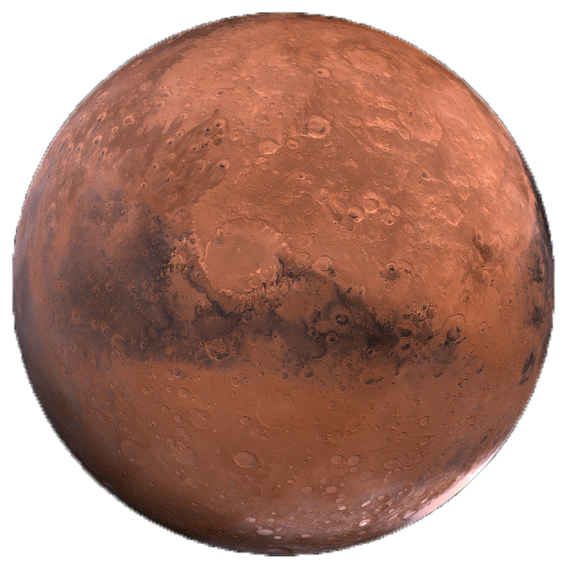

Mars

Top 10 Facts!
- 4th planet from the sun
- The surface temp on mars is -153 to 20 c
- Mars has the largest dust storms in the solar system
- One mars the sun looks like it is half the size as it does one earth
- There are signs of liquid water on mars
- Mars was recorded by the Egyptian astronomers in 2nd millennium BC
- The orbit period is 1.9 years
- On mars you can jump 3 times higher than on earth
- Mars has the tallest mountains with a max height of 21KM
- Only 18 of the 40 missions to mars have been successful
Three Bonus Facts!
- Rings: Mars has no rings
- Distance From The Sun: 141.6 million mi
- Namesake: Named after the Roman God of War
Satellite Info
Mars has 2 moon Phobos & Deimos
|